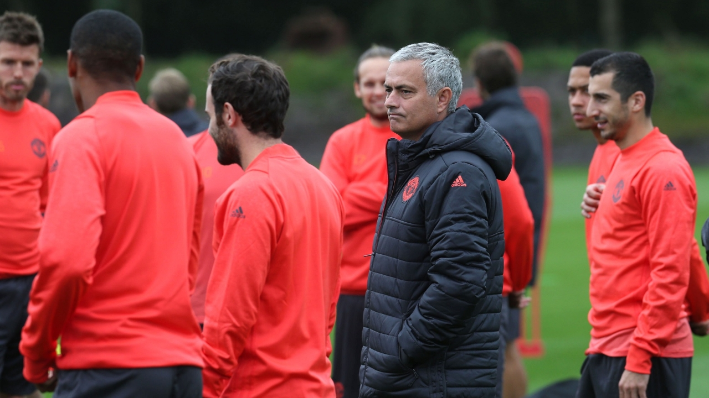
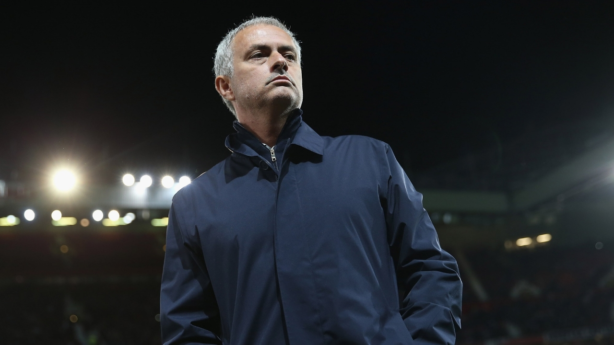

Match & Player news
 10/12/2016 10:24, Report by Ivan Spasov
MOURINHO LEFT FRUSTRATED BY EVERTON DRAW
Jose Mourinho was understandably frustrated after his Manchester United players were forced to settle for another Premier League draw following a late equaliser for Everton at Goodison Park.
"It's another game with a very good performance in a very difficult place to play, in a very emotional stadium, against a team full of good players. So it was a very good performance but a bad result in relation to the performance. We were the best team by far but we didn't win. We had chances for 2-0, we had the ball against the post and then we lost a goal in the last few minutes. If you come to Goodison Park and you get a point in other circumstances I don't think it's a bad result because it's a difficult place to play, but we were the best team by far so the point is not the point that gives us what we deserve."
IN CONTROL OF THE GAME:"It's impossible or very difficult to control a game for 90 minutes but I would say we controlled it for 80 minutes. It's normal that an opponent has a reaction and the way they play with long, direct balls, it's impossible to stop because when a team plays passing football you can press, but when they play long balls you cannot stop the ball in the air. So they would always have a little bit of pressure but that's normal."
ZLATAN IN GOOD FORM:"He's playing like the team is playing. The team is playing very, very well and the players are playing well. I would say [Phil] Jones and [Marcos] Rojo were magnificent. Jones for many years doesn't play five matches in a row and Rojo last season was left-back, on the bench and at home and in this moment he's had five consecutive matches also playing central defence, so we had phenomenal performances and a very good solid performance as a team."
WHY DID YOU BRING FELLAINI ON?:"What do you mean by that [question]? I thought you would know more about football than you do because the answer is obvious. Everton is not a passing team like they were. Everton is a team that plays direct. Everything is direct. Goalkeeper direct. Ashley Williams direct. Funes Mori direct. Everything is direct and when a team is losing and plays direct intensifies the direct football, and you have a player on the bench with two metres, you play that player in front of the defensive line to help the team win the match."
WE DESERVED BETTER RESULTS:"If you tell me that in any one of our draws, the opponent was closer to winning than us, I will tell you that is completely untrue. In every one of our draws, we were much more closer to winning than the opponent and we deserve to win these matches. I repeat, this season what matters is the results, it's not the quality of football."
THE TEAM ARE PLAYING WELL:"I am concerned because we don't get the results we deserve. I know that when my teams win matches playing a different style of football then in that moment all that matters is the style of football, not the results. You have in this moment teams in the Premier League teams playing defensive and counter-attack football but getting results. This season that is phenomenal in your [the media's] words. When my teams are playing extremely well, the results are more important. So that's where we are. But I am happy that my team is playing really well, even in difficult matches like this one. It's a problem for us that we are not getting what we deserve, and it's a problem for us that we have a position in the table that has no relation with the quality of football we are showing."
CONCERNED THAT YOU ARE NOT WINNING?:"You [the press] have to make a decision because when my teams are playing pragmatic football and winning matches and winning titles, you say that it is not right and nice. When my teams like now, they play very, very well, and there is a huge change to the past two or three years, now you say what matters is to get results, it doesn't matter what. At this moment in the Premier League we have teams getting results that defend with eleven players, kick the ball and attack the space in the counter-attack. It's phenomenal, it's beautiful. So we have to make a decision, we have to make a decision. And yes, we have to score more goals. If Herrera, instead of hitting the post, makes it 2-0, then goodbye. Result."